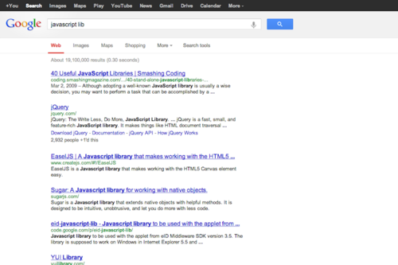
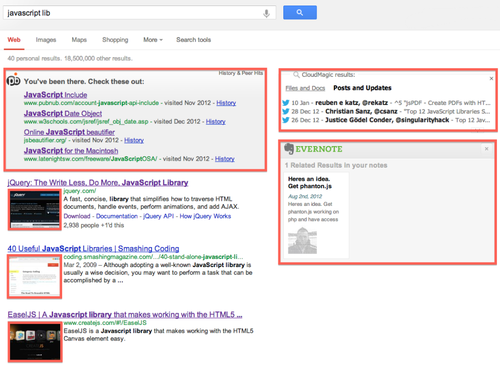

Optimize Your Search Space
Originally published at https://singularityhacker.com/optimize-your-search-space

I couldn’t begin to imagine how much time we spend looking at search results pages. As you can see, there’s a lot of wasted space on that page. Since we do spend so much time looking at this page, I would say it’s important to optimize the ‘information richness’ of that experience.

The goal is to have a single interface, the browser, to search through all of your data spread across the Interwebs . You can do that very thing with a few Chrome extensions.

PeerBelt: Trying to find something you know you searched and found before but can’t find now? PeerBelt includes items from your search history inside your search results. Another neat feature is that a PeerBelt icon will appear over previously visited links so you can also save time by avoiding pages you have already visited.
CloudMagic: You probably have documents and files in different cloud services. You might have an important lead in your Facebook chat log and some related documents in a Dropbox folder or a link in a tweet. CloudMagic allows you to search inside your cloud services and social networks like Gmail, Facebook, Twitter, Dropbox, iCloud, and Google Talk. Searching your online networks just got unified.
Evernote Web Clipper: If you’re not using Evernote already, I highly recommend you start. It is the only cloud note service that provides OCR of your images. You can literally take a quick picture of a paper document and be searching its textual content moments later. This extension displays relevant items from your Evernote account right along side your other search results.
SearchPreview: This extension adds a thumbnail image to every website in the results page. This can be an important piece of information when doing research. You’re often trying to judge the credibility of web sites and the appearance of a website communicates micro signals to that end.
gInfinity: Who wants to wait for pages to load? Not me. That’s why the internet gawds make scrolling. Install this extension and scroll right through multiple pages of search returns. No refresh needed.
To finish up, there is one more extension you need to hear about if you really want to customize the look of arbitrary web pages. Its called Stylebot and it allows you to run custom CSS styles on webpages. You can setup your own custom styles or use the templates of popular websites that others have created.